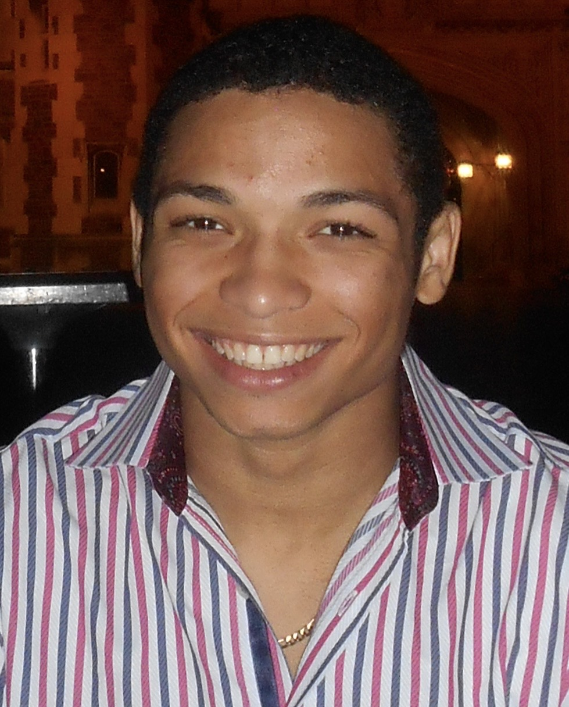

Shimma Wexler
Undergraduate Researcher · Losos Lab
Shimma is a sophomore in Arts & Sciences at Washington University in St. Louis, majoring in Biology. Having grown up on a farm, he developed an early love for the natural world, and he has a particular fondness for reptiles and amphibians. He is excited to be joining the Losos Lab and to begin working alongside the team.